Aomori
Aomori · Aomori
Aomori
Highlighted on the Aomori map.
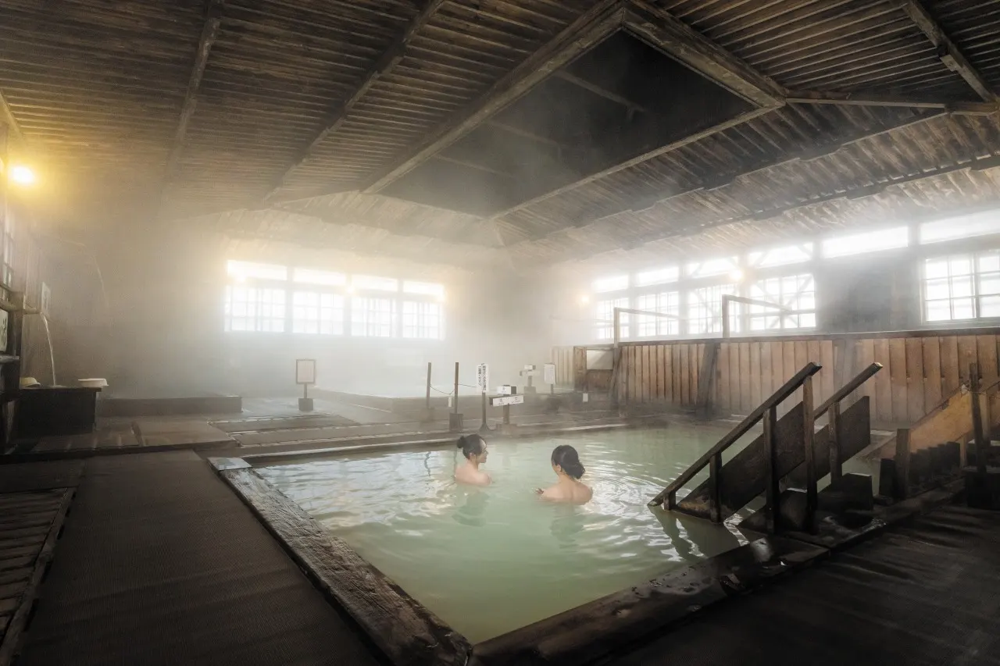
Stay
リッチモンドホテル青森
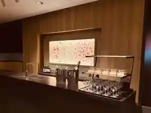
Ritchimondohoteru Aomori
青森グリーンパークホテル
Aomori Guriinpaakuhoteru
青森フォレストホテル アネックス
Aomori Foresutohoteru Anekkusu
スマイルホテル青森
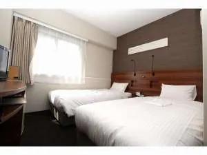
Sumairuhoteru Aomori
スーパーホテル青森
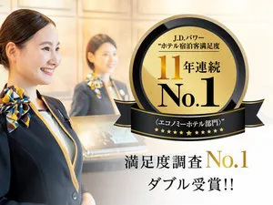
Suupaahoteru Aomori
アートホテル青森
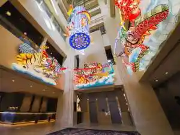
Aatohoteru Aomori
アルファホテル青森
Arufahoteru Aomori
ホテル２１３５
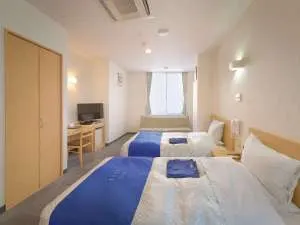
Hoteru 2 1 3 5
アップルパレス青森
Appuruparesu Aomori
天然温泉 淡雪の湯 ドーミーイン青森
Tennen Onsen Awayuki No Yu Doomiiin Aomori
アパホテル〈青森駅県庁通〉
Apahoteru < Aomorieki Kenchou Toori >
ホテルJALシティ青森
Hoteru Jal Shitei Aomori
Dining
三代目網元 魚鮮水産 青森駅前新町店
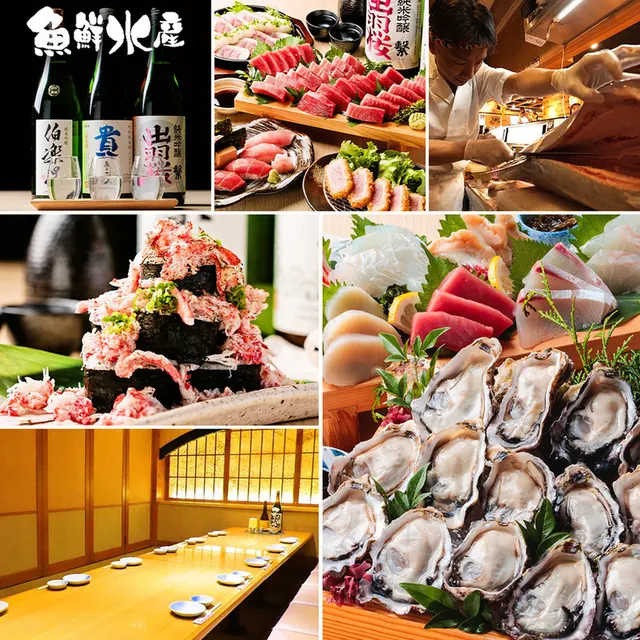
Sandaime Amimoto Uosen Suisan Aomorieki Mae Shinmachi Mise
青森の地酒と海の幸山の幸 青森の炉端 奏屋 青森駅前店
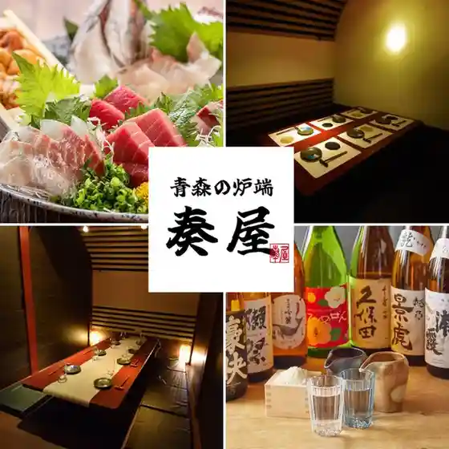
Aomori No Jizake To Umi No Sachi Yama No Sachi Aomori No Robata Sou Ya Aomorieki Mae Mise
酒肴・旬彩 りかり
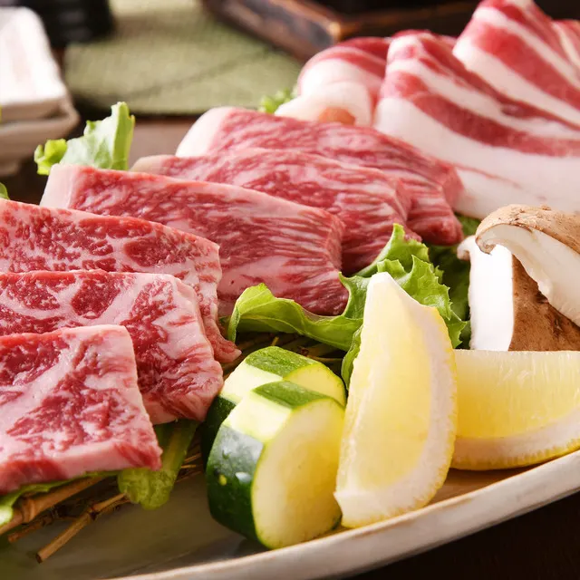
Shukou Jun Sai Rikari
郷土料理×旬菜旬魚を味わう 茜屋 青森駅前店
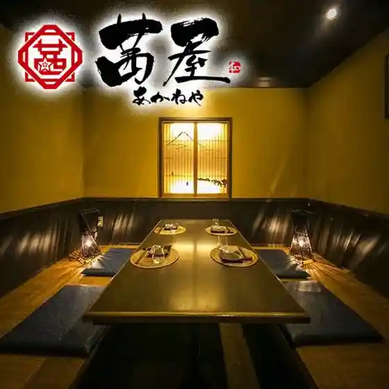
Kyoudoryouri X Jun Na Shungyo Wo Ajiwa U Akaneya Aomorieki Mae Mise
炉端とおでん 呼炉凪来 青森駅前店
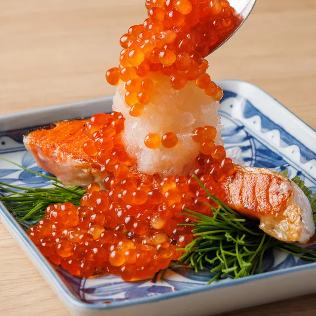
Robata Tooden Ko Ro Nagi Rai Aomorieki Mae Mise
串カツ田中 青森本町店
Kushi Katsu Tanaka Aomori Honchou Mise
ねぶたの國 たか久
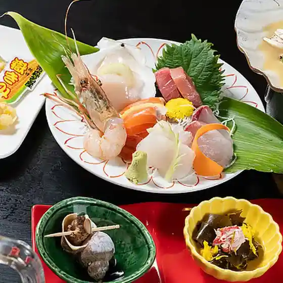
Nebutano Kuni Taka Kyuu
酒肴旬 三ッ石
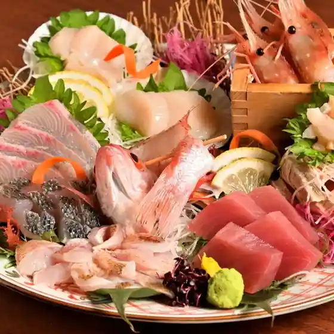
Shukou Jun San Tsu Ishi
鮮魚・創作ダイニング ほいど家
Sengyo Sousaku Dainingu Hoido Ie
炭ばか一代
Sumi Baka Ichidai
旬菜料理 苧麻
Jun Sairyou Ri Karamushi
牛角 青森中央インター店
Gyuukaku Aomori Chuuou Intaa Mise
大衆とり酒場 とりいちず 青森駅前店
Taishuu Tori Sakaba Toriichizu Aomorieki Mae Mise
牛角 青森店
Gyuukaku Aomori Mise
しゃぶしゃぶ温野菜 青森中央インター店
Shabushabu Onyasai Aomori Chuuou Intaa Mise
旬肴ひでか
Jun Sakana Hideka
酒菜の隠れ家 月あかり 青森駅前店
Shusai No Kakure Ie Gatsu Akari Aomorieki Mae Mise
串ダイニング たけぞう
Kushi Dainingu Takezou
鮨 鉄板焼 柊
Sushi Teppanyaki Hiiragi
肴ダイニング心
Sakana Dainingu Kokoro
SEO TOKYO 青森駅前店
Seo Tokyo Aomorieki Mae Mise
CAFE&BAR 2WAY
Cafe&Bar 2Way
新和食 竹林坊
Shinwa Shoku Chikurin Bou
ひゃくしき 青森新町店
Hyakushiki Aomori Shinmachi Mise
Sights
Jigoku-numa Pond
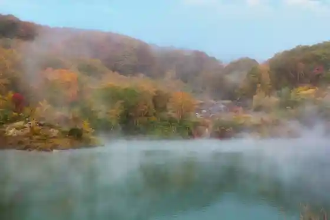
Strongly acidic pond in an old explosion crater about 5 minutes' walk from Sukayu Onsen, with steaming vents nearby.
Asamushi Onsen Matsunoyu
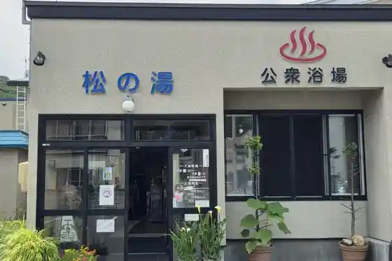
Public bathhouse about 6 minutes' walk from Asamushi Onsen Station, with sodium-rich hot spring water and family baths.
Kayano Highlands
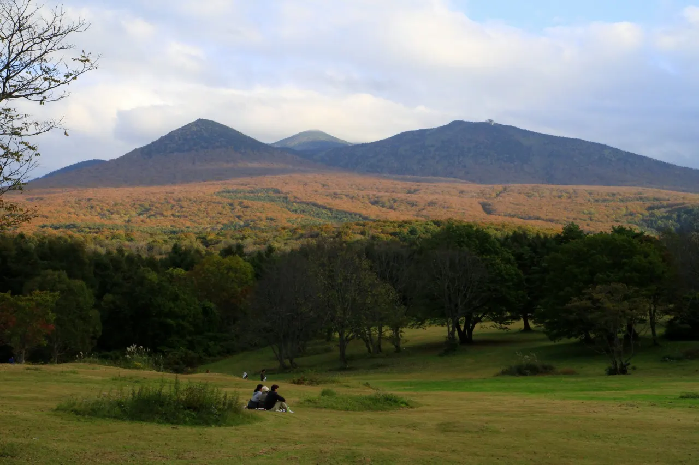
Grassy highland at the foot of the Hakkoda Mountains, green in early summer and framed by autumn foliage in fall.
Popeye Onsen
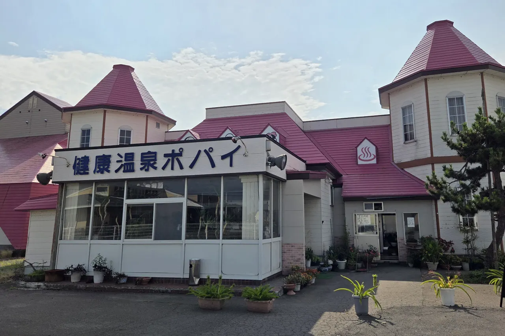
Hot spring bathhouse with a slightly cool outdoor bath, a kids' bath and family baths, greeted by the resident cat.
Wanoyu Natural Hot Spring
Namioka hot spring known for its tea-black water; family baths are refilled for each group.
Gappo Park
Seaside park in central Aomori City, completed in 1894 and listed among Japan's 100 best city parks.
Berjaya Hakkoda Ski Resort
Resort hotel at the foot of the Hakkoda Mountains in Towada-Hachimantai National Park, next to powder-snow ski slopes.
Asamushi Tourist Information Center
Tourist information for Asamushi Onsen, a hot spring town with over 1,200 years of history about 30 minutes from Aomori.
Namioka Hachimangu Shrine
Historic shrine in Namioka said to have been founded in the late 8th century and later a prayer site of the Tsugaru clan.
Shimizu Farm
Organic JAS-certified farm in Aomori's Tsukimino area offering strawberry picking and vegetable planting and harvest experiences.